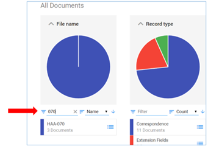
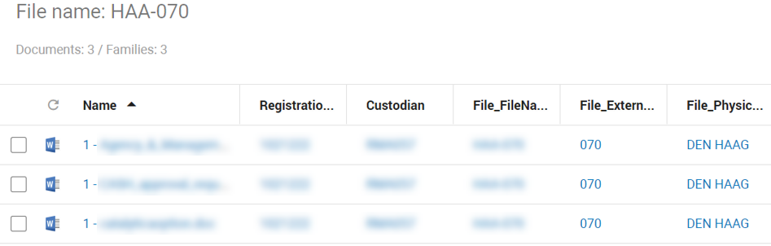
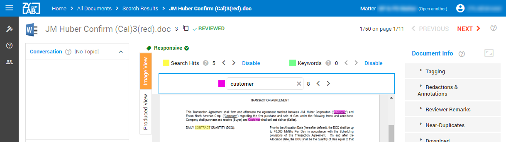

Zoeken & delen
U kunt documenten zoeken via de ZyLAB ONE Information Management Add-on of in ZyLAB Legal Review.
In de ZyLAB ONE Information Management Add-on kunt u zoeken via het zoekveld in de menubalk:

Let op: De resultaten worden weergegeven in ZyLAB ONE Legal Review.
Voor uitgebreide (Engelstalige) informatie over zoektechnieken, zie de ZyLAB ONE Search Language Guide.
Wilt u zoeken (en delen) via ZyLAB Legal Review, dan maakt u gebruik van dezelfde zoektechnieken. Hieronder helpen we u kort op weg.
Zoeken & delen in ZyLAB Legal Review
-
Navigeer naar het startscherm, de home page van Legal Review.
Tip: Maak deze link uw favoriet als dat nog niet gedaan is.
-
Kies de matter waarin u wilt zoeken, via Open Matter of Open Another Matter.


-
Selecteer Browse:

-
U heeft nu de keuze uit de volgende zoekmogelijkheden:
-
Zoeken in de inhoud van alle documenten.
U doet dit via het zoekveld. Voer bijvoorbeeld het woord "amsterdam" in en klik op Search.
Klik op het helpicoontje voor meer informatie over zoeken.

-
Zoeken op een specifiek nummer of naam, afhankelijk van de indeling van de matter (het archief).
Dit kunt u het beste doen via de facets (cirkeldiagrammen).
Voer bijvoorbeeld het nummer "070" en er wordt automatisch gefilterd.

-
Zoeken op een combinate van beide zoekmethoden. Bijvoorbeeld het woord "amsterdam" binnen het dossier "070".

- Bekijk de zoekresultaten in de documentenlijst:

- U kunt elk document uit de documentenlijst openen.
- Bij een geopend document vind u meerdere navigatiefuncties, zoals gemarkeerde gele treffers, volgende/vorig document (previous/next) en het extra zoekveld (Ctrl+F om te zoeken in het document (paarse treffers)).
U kunt ook het zoekspoor in het menu terug volgen (Home > All Documents > ..).

- U kunt de lijstopmaak van de documentenlijst wijzigen door kolommen aan/uit te zetten:
Selecteer eerst Settings:

En daarna Columns:

- U kunt de nieuwe View bewaren via Settings > Views. Voer een naam in voor de nieuwe View.

- U kunt deze bewaarde view delen. Klik op Edit view en selecteer de Shared With tab.

Zoek de personen met wie u deze nieuwe view wilt delen:

- U kunt de gevonden documentenlijst delen door de hele lijst (inclusief kolommen) naar Excel te downloaden: